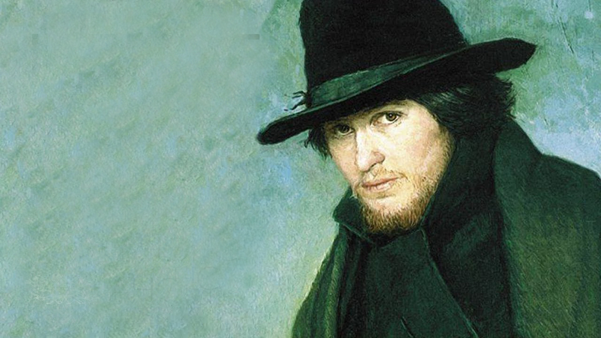

"Идиот" - история любви, веры и безумия
"Идиот" - один из величайших романов Фёдора Достоевского, повествующий о трагической судьбе князя Мышкина, человека с чистой душой и несчастной любовью.
Идея "Идиота", этого великого романа Фёдора Достоевского, зародилась в 1866 году, после его возвращения из Сибири. Словно рождённый из опыта страданий и размышлений о человеческой душе, "Идиот" начал обретать свою форму в Швейцарии, где Достоевский находился с женой. В 1867 году писатель приступил к его написанию, и по частям роман публиковался в журнале "Русский вестник" с января по ноябрь 1868 года, завораживая читателей своей глубокой психологией и захватывающим сюжетом. В 1869 году "Идиот" вышел отдельным изданием, и его судьба была решена. При жизни Достоевского "Идиот" переиздавался ещё несколько раз, в том числе в 1873, 1878 и 1880 годах, подтверждая свою вечную актуальность и неизменную силу как литературного произведения.
Роман "Идиот" - это история князя Мышкина, молодого человека, страдающего эпилепсией, который возвращается в Россию после нескольких лет пребывания в Швейцарии. Он прибывает в Петербург, чтобы воссоединиться с семьей, но его жизнь кардинально меняется, когда он знакомится с Настасьей Филипповной, красивой и загадочной женщиной, которая была брошена своим богатым женихом, генералом Епанчиным. Князь Мышкин, наивный и чистый душой, видит в Настасье Филипповне страдающую душу и искренне хочет ей помочь. Он влюбляется в неё, но его любовь оказывается непростой, поскольку Настасья Филипповна, несмотря на свою красоту и привлекательность, глубоко несчастна и не верит в истинную любовь. Она любит Рогожина, богатого и жестокого человека, который одержим ею и готов на всё, чтобы заполучить её. В романе разворачивается любовный треугольник между Мышкиным, Настасьей Филипповной и Рогожиным. Мышкин, искренне желающий спасти Настасью Филипповну от её страданий, предлагает ей выйти за него замуж, но она колеблется, разрываясь между страстью к Рогожину и желанием найти настоящую любовь. В итоге, она соглашается выйти замуж за Мышкина, но лишь для того, чтобы показать Рогожину, что она ему не принадлежит. В это же время, в жизни Мышкина появляется Аглая Епанчина, молодая, красивая и умная девушка, в которую князь также испытывает сильные чувства. Однако, несмотря на взаимную симпатию, между ними возникают трудности, связанные с различиями в характерах и взглядах на жизнь. Роман "Идиот" - это не просто история любви, но глубокая философская драма, которая исследует темы человеческой природы, морали, религии, смысла жизни и роли страдания в судьбе человека. Достоевский мастерски создает образ князя Мышкина - человека, который верит в добро, любовь и прощение, но оказывается не в состоянии изменить мир, в котором царят эгоизм, лицемерие и жестокость. В финале романа, Настасья Филипповна, не выдержав давления, выбирает Рогожина и погибает от его рук. Мышкин, глубоко скорбя о её смерти, окончательно теряет веру в людей и мир. Он уезжает из Петербурга, оставляя позади разбитые надежды и неразрешенные противоречия. "Идиот" - это мощный и трагический роман, который заставляет читателя задуматься о сложности человеческих отношений, о цене любви, о границе между добром и злом, о том, что значит быть человеком.
Идеал добра и человечности: Князь Мышкин — главный герой романа, олицетворяющий идеалы сострадания и любви. Он возвращается в Россию из Швейцарии, где лечился от эпилепсии, и его доброта и наивность контрастируют с жестокостью окружающего мира.
"Идиот" в глазах общества: Общество считает его «идиотом» из-за его открытости, искренности и отсутствия социальных манер. Однако именно эта наивность позволяет ему видеть мир без предвзятости и осуждения.
Страдания и внутренний конфликт: Мышкин часто сталкивается с внутренними конфликтами, пытаясь понять людей вокруг себя и их мотивы. Его доброта становится причиной страданий, так как он не может противостоять злоупотреблениям и манипуляциям.
Жертва своей искренности: Князь оказывается жертвой своей искренности и доброты, что приводит к трагическим последствиям. Его идеализм не находит отклика в мире, полном эгоизма и корысти.
Трагическая героиня: Настасья — сложный персонаж, олицетворяющий страсть и внутреннюю борьбу. Она живет между желанием любви и страхом перед своей судьбой.
Объект страсти: Она становится объектом любви как князя Мышкина, так и Рогожина, что создает треугольник, полный конфликтов и страстей.
Жертва обстоятельств: Настасья — жертва своего прошлого и общества, которое её осуждает. Её красота становится как благословением, так и проклятием.
Поиск свободы: Внутренний конфликт Настасьи заключается в стремлении к свободе и одновременно в страхе перед её последствиями. Она ищет любовь, но боится привязанности.
Одержимый любовью: Рогожин представляет собой страстного и жестокого человека, одержимого любовью к Настасье Филипповне. Его чувства к ней безумны и разрушительны.
Темная сторона человеческой природы: Он символизирует животные инстинкты и страсти, которые могут привести к насилию и трагедии. Его одержимость ведёт к конфликту с князем Мышкиным.
Внутренние противоречия: Рогожин — сложный персонаж, который испытывает как любовь, так и ненависть. Его внутренние противоречия приводят к трагическим событиям в романе.
Молодая и привлекательная: Аглая — дочь генерала Иволгина, она становится объектом внимания князя Мышкина после Настасьи. Её характер многослоен и противоречив.
Конфликт между чувствами и долгом: Аглая находится в постоянном конфликте между своими чувствами к Мышкину и ожиданиями общества. Она стремится к независимости, но также хочет быть любимой.
Сложная личность: Её образ меняется на протяжении романа, она проявляет как капризность, так и глубину чувств.
Представитель упадка аристократии: ЗГенерал Иволгин символизирует старое русское дворянство, его жизненные неудачи отражают упадок аристократии.
Комический элемент: Его комические черты делают его образ более легким на фоне серьезных тем романа. Он часто попадает в нелепые ситуации из-за своей гордости и тщеславия.
Отношение к дочери: Генерал испытывает гордость за свою дочь Аглаю, но также пытается контролировать её жизнь, что приводит к конфликтам.
